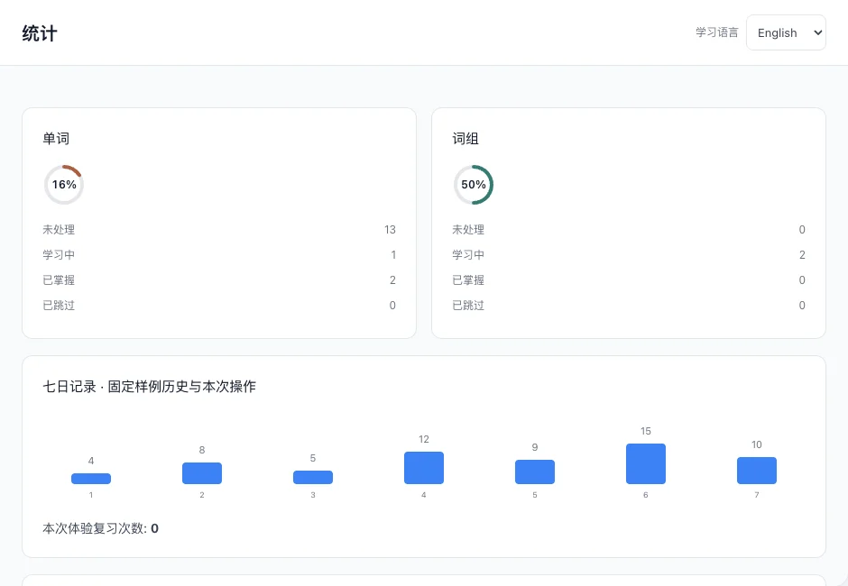
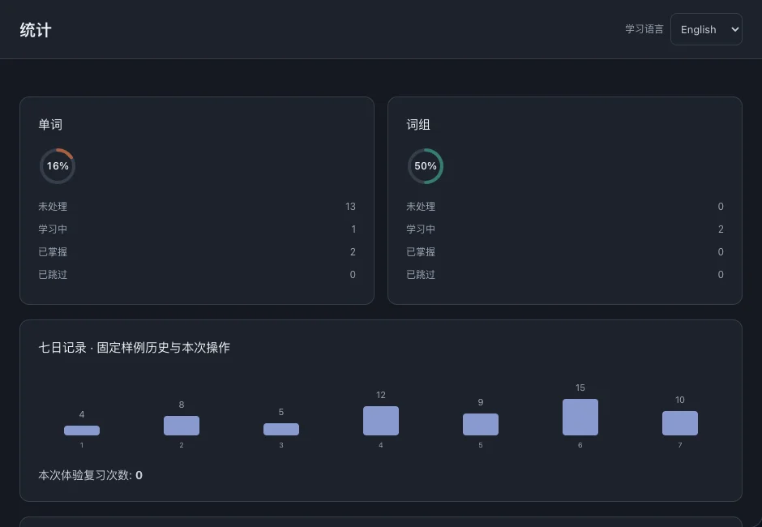

统计
通过学习状态、复习记录和文件进度，决定下一步学什么。这些指标反映学习活动，不是语言水平评分。
本页目录
单词与词组状态
数量分别统计未处理、学习中、已掌握和已跳过的条目，单词与词组分开汇总。



近期复习
七日图表显示近期复习活动，完成复习后更新；复习次数不代表掌握词数。
文件学习进度
学习指数综合条目状态：已掌握与已跳过计入全部权重，学习中计入一半，未处理计为零。
- 在“统计”中找到文件，点击进度入口继续阅读。
通过学习状态、复习记录和文件进度，决定下一步学什么。这些指标反映学习活动，不是语言水平评分。
数量分别统计未处理、学习中、已掌握和已跳过的条目，单词与词组分开汇总。


七日图表显示近期复习活动，完成复习后更新；复习次数不代表掌握词数。
学习指数综合条目状态：已掌握与已跳过计入全部权重，学习中计入一半，未处理计为零。